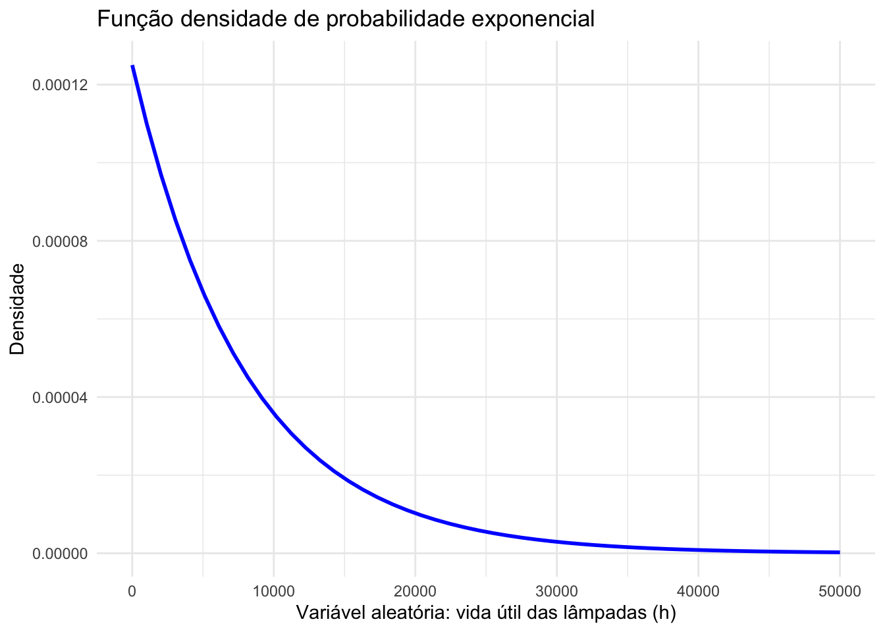

6.3 Modelos teóricos de probabilidade para variáveis aleatórias contínuas
Experimentos aleatórios nos quais os possíveis resultados assumem valores resultantes de processos de mensuração tais como, por exemplo, rendas, pesos, velocidades, tempos, comprimentos, pertencentes aos números Reais, podem ser adequadamente modelados por variáveis aleatórias contínuas.
6.3.1 Uniforme
A Distribuição Uniforme é uma das distribuições contínuas mais simples de toda a Estatística. Ela se caracteriza por ter uma função densidade contínua em um intervalo fechado \([a,b]\). Ou seja, a probabilidade de ocorrência de um certo valor é sempre a mesma.
Embora as aplicações desta distribuição não sejam tão abundantes quanto as demais distribuições que discutiremos mais adiante, utilizaremos a Distribuição Uniforme para introduzirmos as funções contínuas e darmos uma noção de como se utiliza a função densidade para determinarmos probabilidades, esperanças e variâncias.
Uma variável aleatória \(X\) tem Distribuição Uniforme no intervalo \([a,b]\), com notação \(X \sim U (a, b)\), se sua função densidade de probabilidade for dada por:
\[ f(X=x)= \begin{cases} \frac{1}{b-a}, \hspace{0.6cm} \text{para } a \le x \le b \\ 0, \hspace{1cm} \text{para qualquer outro x}\\ \end{cases} \]
A esperança e a variância de uma variável aleatória contínua com Distribuição Uniforme são:
- Esperança: \(E(X) = \frac{(a+b)}{2}\); e,
- Variância: \(Var(X) = \frac{(b-a)^{2} }{12}\).
A probabilidade para um intervalo \([c,d]\) tal que \(a \le c < d \le b\) será dada por:
\[ \int_c^d \frac{1}{(b - a)} \, dx \\ \frac{1}{(b - a)} \int_c^d 1 \, dx \\ \frac{1}{(b - a)} |^{d}_{c} \\ \frac{(d - c)}{(b - a)} \]
6.3.2 Exponencial
A Distribuição Exponencial é largamente utilizada nas áreas de engenharia, física, computação e biologia para modelar variáveis tais como vida útil de equipamentos, tempos entre falhas (\(TBF\)), tempos de sobrevivência de espécies, intervalos de solicitação de recursos por exemplo.
Esta é uma distribuição que se caracteriza por ter uma função de taxa de falha constante, a única com esta propriedade e por essa razão tem tem sido usada extensivamente como um modelo para o tempo de vida de certos produtos e materiais.
Uma variável aleatória contínua \(X\) que assume valores não negativos segue o modelo teórico Exponencial com parâmetro (taxa) \(\lambda\): \(X \sim Exp (\lambda)\) . Sua função densidade de probabilidade é dada por:
\[
f(X=x)=
\begin{cases}
\lambda \cdot \varepsilon ^{-\lambda \cdot x} \text{, para } x \ge 0 \\
0 \text{, para } x < 0\\
\end{cases}
\]
Alternativamente com parâmetro (escala): \(\alpha=\frac{1}{\lambda}\) e sua sua densidade de probabilidade é dada por:
\[ f(X=x)= \begin{cases} \frac{1}{\alpha} \cdot \varepsilon ^{-\frac{1}{\alpha} \cdot x} \text{, para } x \ge 0 \\ 0 \text{, para } x < 0\\ \end{cases} \]
Para se calcular probabilidades de uma Distribuição Exponencial torna-se necessária a resolução da integral associada, posto que a análise simplificada de figuras geométricas não mais é possível.
De modo geral temos:
\[\begin{align*} P( a < X < b) & = \int_{a}^{b} \lambda \cdot \varepsilon ^{- \lambda \cdot x} dx \\ P( a < X < b) & = - \varepsilon^{-\lambda \cdot x} \rvert_{a}^{b} \\ P( a < X < b) & = \varepsilon^{-\lambda \cdot a} - \varepsilon^{-\lambda \cdot b} \\ \end{align*}\]
Sua esperança e a variância são:
- Esperança: \(E(X) = \mu = \frac{1}{\lambda}=\alpha\); e,
- Variância: \(Var(X) = \frac{1}{\lambda^{2}}=\alpha^{2}\).
Exemplo: Uma indústria fabrica lâmpadas especiais que ficam em operação continuamente. A empresa oferece a seus clientes a garantia de reposição, caso a lâmpada dure menos de 50 horas. A vida útil dessas lâmpadas pode ser modelada adequadamente através da distribuição Exponencial com parâmetro \(\lambda = \frac{1}{8000}\). Determine a probabilidade de uma lâmpada necessitar ser trocada pela indústria em razão da garantia oferecida ao cliente.
Definindo a variável aleatória contínua \(T\) como sendo a vida útil da lâmpada: \(T \sim Exp (\frac{1}{8000})\) e sua função densidade de probabilidade:
\[ f(T=t)= \begin{cases} \frac{1}{8000} \cdot \varepsilon ^{- \frac{1}{8000} \cdot t} \text{, para } t \ge 0 \\ 0 \text{, para } x < 0\\ \end{cases} \]
A probabilidade de que uma lâmpada tenha uma vida útil menor que 50 horas será dada pela integral da fdp no intervalo [0;50]:
\[\begin{align*} P( 0 < T < 50) & = \int_{0}^{50} \lambda \cdot \varepsilon ^{- \lambda \cdot x} dx \\ P( 0 < T < 50) & = - \varepsilon^{-\lambda \cdot x} \rvert_{0}^{50} \\ P( 0 < T < 50) & = \varepsilon^{- \frac{1}{8000} \cdot 0} - \varepsilon^{- \frac{1}{8000} \cdot 50} \\ P( 0 < T < 50) & = 1-0,939413063 \\ & = 0,006 \\ \end{align*}\]
A probabilidade de que uma lâmpada fabricada por essa empresa tenha uma vida útil menor que 50 h é de 0,006 (proporção de 0,60%), naturalmente muito pequena considerando que a duração média das lâmpadas é de \(\mu = \frac{1}{\lambda} =\frac{1}{\frac{1}{8000}}=8000\) h, aproximadamente 333 dias (esperança da variável).
# Biblioteca necessária
library(ggplot2)
# Parâmetro lambda (inverso da esperança)
lambda <- 1/8000 # horas
# A esperança é de 8000 horas ~ 1 ano
# Faixa de valores para mostrar a curvatura suave
x_values <- seq(0, 50000, length.out = 50)
# Função densidade de probabilidade exponencial: f(x) = lambda * exp (-lambda*x)
# para lambda maior que zero > X ~ Exp (lambda)
density_values <- dexp(x_values, rate = lambda)
# Pontos
plot_data <- data.frame(x = x_values, density = density_values)
# Gráfico
plot <- ggplot(plot_data, aes(x, density)) +
geom_line(color = "blue", size = 1) +
theme_minimal() +
labs(title = "Função densidade de probabilidade exponencial",
x = "Variável aleatória: vida útil das lâmpadas (h)",
y = "Densidade")## Warning: Using `size` aesthetic for lines was deprecated in ggplot2 3.4.0.
## ℹ Please use `linewidth` instead.
## This warning is displayed once every 8 hours.
## Call `lifecycle::last_lifecycle_warnings()` to see where this warning was
## generated.
# Para destacar a área de integração (0 a 50)
x_values <- seq(0, 1000, length.out = 50)
# Função densidade de probabilidade exponencial: f(x) = lambda * exp (-lambda*x)
# para lambda maior que zero
# X ~ Exp (lambda)
density_values <- dexp(x_values, rate = lambda)
# Pontos
plot_data <- data.frame(x = x_values, density = density_values)
# Gráfico
plot <- ggplot(plot_data, aes(x, density)) +
geom_line(color = "blue", size = 1) +
theme_minimal() +
labs(title = "Função densidade de probabilidade exponencial",
x = "Variável aleatória: vida útil das lâmpadas (h)",
y = "Densidade")
highlight_values <- c(0, 50)
plot <- plot + geom_ribbon(data = subset(plot_data, x >= highlight_values[1] & x <= highlight_values[2]),
aes(x = x, ymin = 0, ymax = density),
fill = "yellow", alpha = 0.5)
plot
# Valores do intervalo
# 0.006230509 para [0,50]
# 0.9937695 para [50 , inf]. 1 - Prob[0,50]
valores <- c(0, 50) #a integrar
lambda <- 1/8000 # horas
# Integração numérica
probability <- integrate(function(x) dexp(x, rate = lambda), lower = valores[1], upper = valores[2])$value
# Valor
cat("Probabilidade de se observar valores entre ", valores[1], "e", valores[2], "é :", probability, "\n")## Probabilidade de se observar valores entre 0 e 50 é : 0.006230509
Exemplo: O intervalo de tempo (minutos) entre as emissões de uma fonte radioativa é uma variável aleatória contínua que pode ser modelada pela Distribuição Exponencial com parâmetro \(\lambda=0,20\). Calcule a probabilidade de haver uma emissão em um intervalo de tempo inferior a 2 minutos.
Definindo a variável aleatória contínua \(T\) como sendo o intervalo de tempo entre as emissões radioativas dessa fonte: \(T \sim Exp (0,20)\) e sua função densidade de probabilidade:
\[
f(T=t)=
\begin{cases}
0,20 \cdot \varepsilon ^{- 0,20\cdot t} \text{, para } t \ge 0 \\
0 \text{, para } x < 0\\
\end{cases}
\]
A probabilidade de uma emissão em um intervalo de tempo inferior a 2 minutos será dada pela integral da fdp no intervalo [0;2]:
\[\begin{align*} P( 0 < T < 2) & = \int_{0}^{2} \lambda \cdot \varepsilon ^{- \lambda \cdot x} dx \\ P( 0 < T < 2) & = - \varepsilon^{-\lambda \cdot x} \rvert_{0}^{2} \\ P( 0 < T < 2) & = \varepsilon^{- 0,20 \cdot 0} - \varepsilon^{- 0,20 \cdot 2} \\ P( 0 < T < 2) & = 1 - 0,6703 \\ & = 0,3296 \end{align*}\]
A probabilidade de uma emissão em um intervalo de tempo inferior a 2 min é de 0,3296, naturalmente considerável uma vez que o intervalo médio entre as emissões radioativas é de \(\mu = \frac{1}{\lambda}=\frac{1}{0,20}= 5\) min (esperança da variável).
valores <- c(0, 2) #a integrar
lambda <- 0.2 # lambda já foi dado
# Integração numérica
probability <- integrate(function(x) dexp(x, rate = lambda), lower = valores[1], upper = valores[2])$value
# Valor
cat("Probabilidade de se observar valores entre ", valores[1], "e", valores[2], "é :", probability, "\n")## Probabilidade de se observar valores entre 0 e 2 é : 0.32968
Exemplo: Certo tipo de fusível elétrico tem duração de vida (horas) que segue uma Distribuição Exponencial com tempo médio de vida de 100 horas. Cada peça tem um custo de R$ 10,00 e, se durar menos de 200 horas, existe um custo adicional de R$ 8,00. Pede-se: - a probabilidade de fusível durar mais de 150 horas; e,
- o custo esperado.
Se a vida útil média (\(\mu\)) desse fusível é de 100 horas, então o valor do parâmetro dessa distribuição será \(\frac{1}{100}\) (pois \(\mu=\frac{1}{\lambda}\)) e a variável aleatória contínua \(T\) será definida como sendo a vida útil do fusível: \(T \sim Exp (\frac{1}{100})\), com sua função densidade de probabilidade:
\[ f(T=t)= \begin{cases} \frac{1}{100} \cdot \varepsilon ^{- \frac{1}{100} \cdot t} \text{, para } t \ge 0 \\ 0 \text{, para } x < 0\\ \end{cases} \]
O primeiro item pede a probabilidade de um fusível durar mais de 150 horas poderá ser dada por 1 menos o valor da integral da fdp no intervalo [0;150]:
\[\begin{align*} P( T > 150) & = 1 - P(0<T<150) \\ & = 1- \int_{0}^{150} \lambda \cdot \varepsilon ^{- \lambda \cdot x} dx \\ & = 1 - \varepsilon^{-\lambda \cdot x} \rvert_{0}^{150} \\ & = 1 - (\varepsilon^{- 0,01 \cdot 0} - \varepsilon^{-0,01 \cdot 150}) \\ & = 1 - (1 - 0,22313) \\ & = 0,22313 \newline \end{align*}\]
A probabilidade de um fusível ter uma vida útil maior que 150 horas é de 0,22313.
valores <- c(0, 150) # integrar e subtrair de 1
lambda <- 1/100 # foi dada a vida útil média
# Integração numérica
probability <- 1- integrate(function(x) dexp(x, rate = lambda), lower = valores[1], upper = valores[2])$value
# Valor
rotulos <- c(150, 'infinito') # integrar e subtrair de 1
cat("Probabilidade de se observar valores entre ", rotulos[1], "e", rotulos[2], "é :", probability, "\n")## Probabilidade de se observar valores entre 150 e infinito é : 0.2231302
O custo unitário de um fusível é de R$ 10,00 com um custo adicional de R$ 8,00 se sua vida for inferior a 200 horas. Assim o custo esperado de um fusível será dada produto dos custos pelas respectivas probabilidades associadas:
\[ C= \begin{cases} R\$ 10,00 \text{ se t > 200}\\ R\$ 18,00 \text{ se t < 200}\\ \end{cases} \]
A probabilidade de um fusível durar mais de 200 horas poderá ser dada por 1 menos o valor da integral da fdp no intervalo [0;200]:
\[\begin{align*} P( T > 200) & = 1 - P(0<T<200) \\ & = 1- \int_{0}^{200} \lambda \cdot \varepsilon ^{- \lambda \cdot x} dx \\ & = 1 - \varepsilon^{-\lambda \cdot x} \rvert_{0}^{200} \\ & = 1 - (\varepsilon^{- 0,01 \cdot 0} - \varepsilon^{-0,01 \cdot 200}) \\ & = 1 - (1 - 0,1353) \\ & = 0,1353 \newline \end{align*}\]
A probabilidade de um fusível ter uma vida útil maior que 200 horas é de 0,1353.
valores <- c(0, 200) # integrar e subtrair de 1
lambda <- 1/100 # foi dada a vida útil média
# Integração numérica
probability <- 1- integrate(function(x) dexp(x, rate = lambda), lower = valores[1], upper = valores[2])$value
# Valor
rotulos <- c(200, 'infinito') # integrar e subtrair de 1
cat("Probabilidade de se observar valores entre ", rotulos[1], "e", rotulos[2], "é :", probability, "\n")## Probabilidade de se observar valores entre 200 e infinito é : 0.1353353
A probabilidade de um fusível durar menos de 200 horas será dada por 1 menos o valor calculado anteriormente:
\[ P( 0 < T < 200) = 1 - 0,1353 = 0,8647 \]
A probabilidade de um fusível ter uma vida útil menor que 200 horas é de 0,8647.
valores <- c(0, 200) #a integrar
lambda <- 1/100 # foi dada a vida útil média
# Integração numérica
probability <- integrate(function(x) dexp(x, rate = lambda), lower = valores[1], upper = valores[2])$value
# Valor
cat("Probabilidade de se observar valores entre ", valores[1], "e", valores[2], "é :", probability, "\n")## Probabilidade de se observar valores entre 0 e 200 é : 0.8646647
O custo esperado é de: \(10,00 \times 0,1353 + 18,00 \times 0,8647 = R\$ 16,92\)
6.3.3 Normal
A distribuição Normal (Gaussiana) é uma das mais importantes distribuições de probabilidades por possibilitar a adequada modelagem de fenômenos de diversas áreas: física, biologia, psicologia, ciências sociais e econômicas.
A história da curva Gaussiana está relacionada à formulação da Teoria da Probabilidade nos séculos XVIII e XIX, que contou com contribuições de muitos matemáticos dentre os quais podemos citar Abrahan De Moivre, Pierre Simon Laplace, Adrien-Marie Legendre, Francis Galton e Johann Carl Friedrich Gauss.
Esses matemáticos constataram que as variações entre repetidas medidas da mesma grandeza física apresentavam um grau surpreendente de regularidade. Com a repetição de medidas em um numero razoável observou-se que distribuição das variações poderia ser satisfatoriamente aproximada por uma curva contínua.
Em 1920 Karl Pearson relembra ter usado a expressão curva normal como uma substituição de natureza diplomática para evitar uma questão internacional sobre precedência que poderia surgir no uso comum à época da denominação “Curva de Laplace-Gauss”, dois grandes matemáticos e astrônomos. Todavia, reconheceu também que a nova denominação poderia levar pessoas a incorrer no erro de supor que todas as demais distribuições seriam anormais.
Uma variável aleatória contínua \(X\) que assuma valores \(x\) (\(-\infty < x < \infty\)) com média \(\mu\) e variância \(\sigma^{2}\) distribuídos segundo uma Curva Gaussiana é denotada por \(X \sim N(\mu, \sigma^{2})\), e sua função densidade de probabilidade é dada por:
\[ f(x)=\frac{1}{ {\sigma . \sqrt {2\pi }}}. e^\frac{{-(x-\mu)^{2}}}{2.\sigma^{2}} \]
A função de probabilidade cumulativa, a probabilidade de que a variável aleatória \(X\) apresente um valor menor ou igual a \(x\) é dada por:
\[ F(x) = P(X\le x) = \frac{1}{\sigma \sqrt{2}\pi } \underset{-\infty }{\overset{x}{\int }} {e^ \frac{-(v - \mu)^{2}}{2\sigma^{2}}}dv \]
Sejam as seguintes variáveis aleatórias contínuas com Distribuição Normal:
- \(X \sim N(\mu_{X}, {\sigma^{2}}_{X})\), tal que \(E(X)=\mu_{X}\) e \(Var(X)= \sigma^{2}_{X}\); e
- \(Y \sim N(\mu_{Y}, {\sigma^{2}}_{Y})\), tal que \(E(Y)=\mu_{Y}\) e \(Var(Y)= \sigma^{2}_{Y}\).
Uma variável aleatória definida como uma soma de variáveis Normais \(W=X \pm Y\) terá:
- E(W) = \(\mu_{X} \pm \mu_{y}\); e,
- Var(W) = \(\sigma^{2}_{X} + \sigma^{2}_{Y}\).
Para qualquer variável aleatória contínua com Distribuição Normal, chama-se de padronização à mudança da escala original dos dados para unidades padronizadas: scores z.
Uma variável padronizada segue possuindo Distribuição Normal, sendo denotada por \(Z \sim N (0,1)\), indicando que a média é \(0\) e o desvio-padrão é \(1\). Para a padronização de uma variável original \(X\) segue:
\[ Z = \frac{X-\mu}{\sigma} \]
A função densidade de probabilidade de uma variável aleatória contínua padronizada é dada por:
\[\begin{align*} f(z) & = \frac{1}{{\sqrt {2\pi } }}e^{ - \frac{{z^2 }}{2}} \\ f(z) & = 0,3989e^{ - 5z^2} \end{align*}\]
E a função de probabilidade cumulativa (a probabilidade de que a variável aleatória padronizada \(Z\) apresente um valor menor ou igual a \(z\)}) é dada por:
\[\begin{align*} F(z) & = P(Z\le z) \\ P(Z\le z) & = \frac{1}{\sqrt{2}\pi } \underset{-\infty }{\overset{z}{\int }} e^\frac{-u^{2}} {2} du \end{align*}\]
A área sob a curva padronizada (probabilidade cumulativa entre dois valores \(z\)) é obtida em tabelas, dispensando a resolução numérica da integral acima (posto não possuir solução analítica).
Essas tabelas apresentam no cruzamento de suas linhas e colunas , a área sob a curva Normal padronizada equivalente à probabilidade associada a um **determinado intervalo* como, por exemplo:
Figure 6.3: Tabela Z mostrando a probabilidade ao intervalo [0 ; 1,64] (quadro superior à esquerda explica onde a área se encontra)
A tabela Z possibilita:
1- encontrar a probabilidade (área) partindo de score z; e
2- encontrar o score z.
Modo 1: admita que você padronizou um certo valor e obteve o score z igual a 1,64. Na coluna vertical à esquerda você deverá encontrar qual é a linha que apresenta a unidade e a primeira casa decimal desse valor: 1,6. Nas outras dez colunas verticais você deverá buscar aquela que apresenta a segunda casa decimal desse valor: 4. No cruzamento dessas duas colunas você irá fazer a leitura do número que lá dentro se encontra. Agora veja o desenho orientativo que há no canto superior à direita (cada tabela pode variar um pouco). Ele expõe graficamente uma área hachurada e na cor laranja entre o zero e um valor z. É exatamente o valor dessa área que você acabou de encontrar (a área sob a curva da fdp no intervalo [0 ; 1,64].
Modo 2: admita que você precisa determinar qual é o valor do score z para uma probabilidade (área) no intervalo [0 ; z] = 0,4495. Nessa situação, simplesmente faça o caminho reverso. Encontre que célula apresenta esse valor de 0,4495 e faça a leitura da unidade e a primeira casa decimal do valor do score z na coluna lateral à esquerda (1,6) e de sua segunda casa decimal na linha que identifica as outras dez colunas (4).
A fdp da distribuição Normal apresenta uma curva simétrica centrada em sua média \(\mu\). A fdp da distribuição Normal padronizada também é simétrica e centra em sua média que agora tem valor \(0\).
A totalidade da área sob essas fdp (ou seja, o intervalo \(-\infty < z < \infty\)) possui área igual a \(1\). Cada metade, consequentemente, terá área igual a \(0,50\).
Por esse motivo as tabelas Z mostram apenas a metade da curva da fdp e muitos exercícios irão demandar que você some a área (0,50) do restante da curva da fdp, subtraia ou faça outras operações aritméticas simples para resolvê-los.
library(ggplot2)
options("digits"=4)
prob_desejada=0.95
z_desejado=round(qnorm(prob_desejada),4)
d_desejada=dnorm(z_desejado, 0, 1)
d_0=dnorm(0, 0, 1)
ggplot(NULL, aes(c(-4,4))) +
geom_area(stat = "function",
fun = dnorm,
fill = "lightgrey",
xlim = c(-4, 0),
colour="black") +
scale_y_continuous(name="Densidade") +
scale_x_continuous(name="Valores score (z)", breaks = z_desejado) +
geom_area(stat = "function",
fun = dnorm,
fill = "red",
xlim = c(0, z_desejado),
colour="red")+
geom_area(stat = "function",
fun = dnorm,
fill = "lightgrey",
xlim = c( z_desejado, 4),
colour="black")+
labs(title=
"Curva da função densidade da distribuição Normal padronizada",
subtitle = "P(-inf; 0)=0,50 (cinza) \nP(0 ; 1,645)=0,4495 (vermelho) \nP(1,645 ; inf)=0,0505 (cinza) ")+
geom_segment(aes(x = z_desejado, y = 0, xend = z_desejado, yend = d_desejada), color="blue", lty=2, lwd=0.3)+
geom_segment(aes(x = 0, y = 0, xend = 0, yend = d_0), color="blue", lty=2, lwd=0.3)+
annotate(geom="text", x=-1, y=0.2, label="Probabilidade (área) =0,50 ", angle=0, vjust=0, hjust=0, color="blue",size=3)+
annotate(geom="text", x=0.1, y=0.1, label="Probabilidade (área) =0,4495", angle=0, vjust=0, hjust=0, color="blue",size=3)+
annotate(geom="text", x=2, y=0.05, label="Probabilidade (área) =0,0505", angle=0, vjust=0, hjust=0, color="blue",size=3)+
theme_bw()
Figure 6.4: Curva da fdp da Distribuição Normal padronizada mostrando as áreas delimitadas pelo score z arbitrado (1,64)
Exemplo: Admita que o índice pluviométrico de uma cidade siga uma distribuição normal, com média de 101,60 mm/ano e desvio padrão de 12,70 mm/ano. Quais seriam as probabilidades dessa cidade ter menos de 83,82 mm/ano e mais de 96,52 mm/ano de precipitação no próximo ano?
A probabilidade de ocorrência de uma precipitação inferior a 83,82mm/ano equivale (graficamente) à área situada no intervalo [\(-\infty ; 83,82\)] na curva da fdp da distribuição Normal com média 101,60mm/ano e desvio padrão de 12,70mm/ano:
\[
P(X \le 83,82) \equiv área[-\infty ; 83,82]
\]
A probabilidade de ocorrência de uma precipitação superior a 96,52 mm/ano equivale (graficamente) à área situada no intervalo [\(96,52 ; +\infty\)] na curva da fdp distribuição Normal com média 101,60mm/ano e desvio padrão de 12,70mm/ano
\[ P(X \ge 96,52) \equiv área[96,52 ; +\infty] \]
Padronizando esses valores será possível estabelecer os valores das precipitações associadas às probabilidades pedidas em termos de scores \(z\) que podem ser obtidas em tabelas Z.
Considerando-se que a média é de 101,60mm/ano e o desvio padrão é de 12,70mm/ano, para a primeira precipitação (83,82mm/ano) teremos:
\[\begin{align*} X_{1} & = 83,82 \\ Z_{n} & = \frac{X_{n} - \mu}{\sigma}\\ z_{1} & = -1,40 \end{align*}\]
E a probailidade pedida equivale (graficamente) à área situada no intervalo [\(-\infty ; -1,40\)] na curva da fdp distribuição Normal padronizada:
\[ P(X \le 83,82) = P(Z \le -1,40) \equiv área[-\infty ; -1,40] \]
Portanto, uma precipitação de 83,82mm/ano localiza-se a -1,40 desvios padrão à esquerda da média da curva Normal padronizada (\(\mu=0\)).
Em uma tabela da Distribuição Normal Padronizada temos a probabilidade associada ao intervalo \(P(0<Z<z)\) tabelada para vários valores de \(z\). No caso, veremos que para um valor \(P(0<z<1,40)=0,4192\) (lembre-se: a curva é simétrica por essa razão as tableas resumem-se a mostrar um dos lados).
Sendo a curva simétrica, a área total (probabilidade) sob a fdp é igual a \(1\): 0,50 à esquerda e 0,50 à direita. Assim, a área hachurada em vermelho na Figura 6.5 é a probabilidade pedida:
\[\begin{align*} P(X \le 83,82) & = 0,50 - 0,4192 \\ P(X \le 83,82) & = 0,0808 \end{align*}\]
# Integração numérica no R
fx <- function(x){(1/(12.7*sqrt(2*pi))) * exp( -(1/2)*((x - 101.6)/(12.7))^2)}
p1=integrate(fx, 83.82, 101.6)
1-(p1$value + 0.5)## [1] 0.08076## [1] 0.08076
library(ggplot2)
options("digits"=4)
prob_desejada=0.0808
z_desejado=round(qnorm(prob_desejada),4)
d_desejada=dnorm(z_desejado, 0, 1)
d_0=dnorm(0, 0, 1)
ggplot(NULL, aes(c(-4,4))) +
geom_area(stat = "function",
fun = dnorm,
fill = "red",
xlim = c(-4, z_desejado),
colour="red") +
scale_y_continuous(name="Densidade") +
scale_x_continuous(name="Valores score (z)", breaks = z_desejado) +
geom_area(stat = "function",
fun = dnorm,
fill = "lightgrey",
xlim = c(z_desejado, 0),
colour="black")+
geom_area(stat = "function",
fun = dnorm,
fill = "lightgrey",
xlim = c(0, 4),
colour="black")+
labs(title=
"Curva da função densidade da distribuição Normal padronizada",
subtitle = "P(-inf; -1,40)=0,0808 (vermelho) \nP(-1,40 ; 0 )=0,4192 (cinza) \nP(0 ; inf)=0,50 (cinza) ")+
geom_segment(aes(x = z_desejado, y = 0, xend = z_desejado, yend = d_desejada), color="blue", lty=2, lwd=0.3)+
geom_segment(aes(x = 0, y = 0, xend = 0, yend = d_0), color="blue", lty=2, lwd=0.3)+
theme_bw()
Figure 6.5: Curva da fdp da Distribuição Normal padronizada mostrando as áreas delimitadas pelo score z calculado (-1,40)
De modo análogo para a segunda questão 96,52 mm/ano) teremos:
\[\begin{align*} X_{2} & = 96,52 \\ Z_{n} & = \frac{X_{n} - \mu}{\sigma}\\ z_{2} & = -0,40 \end{align*}\]
E a probailidade pedida equivale (graficamente) à área situada no intervalo [$-0,40 ; $] na curva da fdp distribuição Normal padronizada:
\[ P(X \ge 96,52) = P(Z \ge -0,40) \equiv área[-\infty ; -1,40] \]
Portanto, uma precipitação de 96,52 mm/ano localiza-se a -0,40 desvios padrão à esquerda da média da curva Normal padronizada (\(\mu=0\)).
Em uma tabela da Distribuição Normal Padronizada temos a probabilidade associada ao intervalo \(P(0<Z<z)\) tabelada para vários valores de \(z\). No caso, veremos que para um valor \(P(0<z<0,40)=0,1554\) (lembre-se: a curva é simétrica por essa razão as tableas resumem-se a mostrar um dos lados).
Sendo a curva simétrica, a área total (probabilidade) sob a fdp é igual a \(1\): 0,50 à esquerda e 0,50 à direita. Assim, a área hachurada em vermelho na Figura 6.6 é a probabilidade pedida:
\[ P(X \ge 96,52) = 0,50 + 0,4192 = 0,6554 \]
# Integração numérica no R
fx <- function(x){(1/(12.7*sqrt(2*pi))) * exp( -(1/2)*((x - 101.6)/(12.7))^2)}
p1=integrate(fx, 101.6, 96.52)
1-(p1$value + 0.5)## [1] 0.6554## [1] 0.6554
library(ggplot2)
options("digits"=4)
prob_desejada=0.3446
z_desejado=round(qnorm(prob_desejada),3)
d_desejada=dnorm(z_desejado, 0, 1)
d_0=dnorm(0, 0, 1)
ggplot(NULL, aes(c(-4,4))) +
geom_area(stat = "function",
fun = dnorm,
fill = "lightgrey",
xlim = c(-4, z_desejado),
colour="black") +
scale_y_continuous(name="Densidade") +
scale_x_continuous(name="Valores score (z)", breaks = z_desejado) +
geom_area(stat = "function",
fun = dnorm,
fill = "red",
xlim = c(z_desejado, 0),
colour="red")+
geom_area(stat = "function",
fun = dnorm,
fill = "red",
xlim = c(0, 4),
colour="red")+
labs(title=
"Curva da função densidade da distribuição Normal padronizada",
subtitle = "P(-inf; -0,40)=0,3446 (cinza) \nP(-0,40 ; 0)=0,1554 (vermelho) \nP(0 ; inf)=0,50 (vermelho) ")+
geom_segment(aes(x = z_desejado, y = 0, xend = z_desejado, yend = d_desejada), color="blue", lty=2, lwd=0.3)+
geom_segment(aes(x = 0, y = 0, xend = 0, yend = d_0), color="blue", lty=2, lwd=0.3)+
theme_bw()
Figure 6.6: Curva da fdp da Distribuição Normal padronizada mostrando as áreas delimitadas pelo score z calculado (-0,40)
6.3.4 Student “t”
Se uma variável aleatória \(T\) contínua com \(\nu\) graus de liberdade segue a , sua função densidade de probabilidade é dada por:
\[ f(t) = \frac{-\Gamma \left(\frac{\nu +1}{2}\right)}{\sqrt{\nu \pi }\cdot \Gamma \cdot \left(\frac{\nu }{2}\right)}\cdot {\left(1+\frac{{t}^{2}}{v}\right)}^{\frac{-\left(\nu +1\right)}{2}} \]
com \(\Gamma (n) = (n!)\)
Uma variável aleatória contínua com essa distribuição possui:
- \(E(T)=\mu=0\); e,
- \(Var(T)=\sigma^{2}=\frac{\nu}{(\nu -2)}\), para \(\nu > 2\)
Admitamos que a partir de uma amostra aleatória composta por \(n\) valores retirados de uma população Normal com variância conhecida \(\sigma^{2}\) deseje-se estimar a média \(\mu\).
Para grandes amostras (\(n \ge 30\)) a distribuição amostral de \(\stackrel{-}{X}\) é aproximadamente Normal, com média \(\mu\) e variância \(\frac{\sigma^{2}}{n}\). Isso torna possível estabelecer a seguinte estatística padronizada anteriormente vista:
\[ Z \sim \frac{\bar X -\mu}{\sigma/\sqrt{n}} \sim N(0,1) \]
Entretanto, para amostras de tamanho reduzido e variância desconhecida, a adoção do desvio padrão amostral \(S\) na estatística anterior conduz a uma outra distribuição.
Essa nova distribuição ainda é simétrica e com média \(\mu=0\); todavia não mais seria a Normal padronizada pois seu denominador \(\frac{S}{\sqrt{n}}\) é uma variável aleatória (\(S\) é uma variável aleatória pois depende da amostra extrída ao passo o denominador anterior era uma constante: \(\sigma\)).
Essa família de distribuições (cuja forma tende à de uma distribuição Normam padronizada quando \(n \to \infty , t_{n} \to N(0,1)\) ) foi estabelecida pelo químico e estatístico inglês William Sealy Gosset.
\[
T \sim \frac{\bar X -\mu}{S/\sqrt{n}} \sim t_{n-1}
\]
Para se trabalhar com essa distribuição é preciso saber qual sua forma específica e isso é informado por uma estatística denominada graus de liberdade: \(\nu\).
Toda estatística de teste que dependa de uma variável aleatória possui graus de liberdade (\(\nu\)). O número de informações independentes (ou livres) da amostra dá o número de graus de liberdade da Distribuição \(t\) de Student.
Na situação acima o propósito é estimar a média populacional \(\mu\) através da média amostral \(\stackrel{-}{X}\); todavia, tivemos também que estimar sua variância \(\sigma^{2}\) através de \(S^{2}\), de tal modo que o número de graus de liberdade será \(\nu=n-1\): o tamanho da amostra menos 1.
A área sob a curva da fdp de uma distribuição de Student (probabilidade cumulativa entre dois valores \(t\)) é também obtida em tabelas.
Essas tabelas apresentam no cruzamento de suas linhas e colunas , o valor “t” para várias áreas (probabilidades) associadas cmom:
- ao intervalo fechado: [-t ; +t] (Figura 6.8);
- o intervalo aberto à esquerda: [-inf ; t] (Figura 6.9); e,
- o intervalo aberto à direita: [t, inf] (Figura 6.10).
Nas linhas horizontais lê-se os graus de liberdade \(\nu\) e nas colunas as áreas (probabilidades).
![Tabela t mostrando duas áreas (probabilidades) para um grau de liberdade igual a 10. No intervalo fechado [-0,1289 ; 0,1289] a probabilidade é de 0,90 e para os intervalos abertos à direita: [0,1289 ; inf] e à esquerda: [+inf ; 0,1289] é de 0,95.](images6/tabta.jpg)
Figure 6.7: Tabela t mostrando duas áreas (probabilidades) para um grau de liberdade igual a 10. No intervalo fechado [-0,1289 ; 0,1289] a probabilidade é de 0,90 e para os intervalos abertos à direita: [0,1289 ; inf] e à esquerda: [+inf ; 0,1289] é de 0,95.
A tabela t possibilita:
1- encontrar a probabilidade (área) partindo de um valor “t”; e
2- encontrar um valor “t” para determinada probabilidade
A fdp da distribuição de Student apresenta também uma curva simétrica centrada em sua média \(\mu=0\).
A totalidade da área sob essa fdp (ou seja, o intervalo \(-\infty < t < \infty\)) possui área igual a \(1\). Cada metade, consequentemente, terá área igual a \(0,50\).
Muitos exercícios irão demandar que você some a área (0,50) do restante da curva da fdp, subtraia ou faça outras operações aritméticas simples para resolvê-los.
library(ggplot2)
alfa=0.05
prob_desejada1=alfa/2
df=10
t_desejado1=round(qt(prob_desejada1,df ),4)
d_desejada1=dt(t_desejado1,df)
prob_desejada2=1-alfa/2
df=10
t_desejado2=round(qt(prob_desejada2, df),4)
d_desejada2=dt(t_desejado2,df)
ggplot(NULL, aes(c(-4,4))) +
geom_area(stat = "function",
fun = dt,
args=list(df),
fill = "red",
xlim = c(-4, t_desejado1),
colour="black") +
geom_area(stat = "function",
fun = dt,
args=list(df),
fill = "lightgrey",
xlim = c(t_desejado1,0),
colour="black") +
geom_area(stat = "function",
fun = dt,
args=list(df),
fill = "lightgrey",
xlim = c(0, t_desejado2),
colour="black") +
geom_area(stat = "function",
fun = dt,
args=list(df),
fill = "red",
xlim = c(t_desejado2,4),
colour="black") +
scale_y_continuous(name="Densidade") +
scale_x_continuous(name="Valores de t", breaks = c(t_desejado1, t_desejado2)) +
labs(title= "Curva da função densidade \nDistribuição t (df=10)",
subtitle = "P(-2,228 ; 2,228)=0,90 (cinza) \nP(-inf ; -2,228)=P(2,086; inf)=0,05 (vermelho)")+
geom_segment(aes(x = t_desejado1, y = 0, xend = t_desejado1, yend = d_desejada1), color="blue", lty=2, lwd=0.3)+
geom_segment(aes(x = t_desejado2, y = 0, xend = t_desejado2, yend = d_desejada2), color="blue", lty=2, lwd=0.3)+
annotate(geom="text", x=-0.1, y=0.2, label="Probabilidade (área) =0,90 \n(gl=10)", angle=0, vjust=0, hjust=0, color="blue",size=3)+
annotate(geom="text", x=-3.5, y=0.1, label="Probabilidade (área) =0,05 \n(gl=10)", angle=0, vjust=0, hjust=0, color="blue",size=3)+
annotate(geom="text", x=2.5, y=0.1, label="Probabilidade (área) =0,05 \n(gl=10)", angle=0, vjust=0, hjust=0, color="blue",size=3)+
theme_bw()Figure 6.8: Curva da fdp da Distribuição Studentpara 10 graus de liberdade, mostrando as áreas delimitadas pelos valores +/-t (+/-2,28)
alfa=0.025
prob_desejada=alfa
df=10
t_desejado=round(qt(prob_desejada,df ),4)
d_desejada=dt(t_desejado,df)
ggplot(NULL, aes(c(-4,4))) +
geom_area(stat = "function",
fun = dt,
args=list(df),
fill = "red",
xlim = c(-4, t_desejado),
colour="black") +
geom_area(stat = "function",
fun = dt,
args=list(df),
fill = "lightgrey",
xlim = c(t_desejado,0),
colour="black") +
geom_area(stat = "function",
fun = dt,
args=list(df),
fill = "lightgrey",
xlim = c(0, 4),
colour="black")+
scale_y_continuous(name="Densidade") +
scale_x_continuous(name="Valores de t", breaks = c(t_desejado)) +
labs(title= "Curva da função densidade \nDistribuição t (df=10)",
subtitle = "P(-inf ; -2,228)=0,025 (vermelho) \nP(-2,228 ; +inf)= 0,975 (cinza)")+
geom_segment(aes(x = t_desejado, y = 0, xend = t_desejado, yend = d_desejada), color="blue", lty=2, lwd=0.3)+
annotate(geom="text", x=-0.1, y=0.2, label="Probabilidade (área) =0,975 \n(gl=10)", angle=0, vjust=0, hjust=0, color="blue",size=3)+
annotate(geom="text", x=-3.5, y=0.1, label="Probabilidade (área) =0,025 \n(gl=10)", angle=0, vjust=0, hjust=0, color="blue",size=3)+
theme_bw()
Figure 6.9: Curva da fdp da Distribuição Student para 10 graus de liberdade, mostrando as áreas delimitadas pelo valor -t (-2,28)
alfa=0.025
prob_desejada=1-alfa
df=10
t_desejado=round(qt(prob_desejada,df ),4)
d_desejada=dt(t_desejado,df)
ggplot(NULL, aes(c(-4,4))) +
geom_area(stat = "function",
fun = dt,
args=list(df),
fill = "lightgrey",
xlim = c(-4, 0),
colour="black") +
geom_area(stat = "function",
fun = dt,
args=list(df),
fill = "lightgrey",
xlim = c(0, t_desejado),
colour="black") +
geom_area(stat = "function",
fun = dt,
args=list(df),
fill = "red",
xlim = c(t_desejado, 4),
colour="black")+
scale_y_continuous(name="Densidade") +
scale_x_continuous(name="Valores de t", breaks = c(t_desejado)) +
labs(title= "Curva da função densidade \nDistribuição t (df=10)",
subtitle = "P(-inf ; 2,228)=0,975 (vermelho) \nP(2,228 ; +inf)= 0,025 (cinza)")+
geom_segment(aes(x = t_desejado, y = 0, xend = t_desejado, yend = d_desejada), color="blue", lty=2, lwd=0.3)+
annotate(geom="text", x=0, y=0.2, label="Probabilidade (área) =0,975 \n(gl=10)", angle=0, vjust=0, hjust=0, color="blue",size=3)+
annotate(geom="text", x=2.5, y=0.1, label="Probabilidade (área) =0,025 \n(gl=10)", angle=0, vjust=0, hjust=0, color="blue",size=3)+
theme_bw()
Figure 6.10: Curva da fdp da Distribuição Student para 10 graus de liberdade, mostrando as áreas delimitadas pelo valor -t (-2,28)
6.3.5 Qui-Quadrado
Considerem \(X_{1}\),\(X_{2}\),…,\(X_{\nu}\) como \(\nu\) variáveis aleatórias contínuas independentes e normalmente distribuídas com média zero e variância 1. Definamos também uma variável aleatória resultante da soma dos quadrados das variáveis anteriormente especificadas:
\[ \chi^{2} = X_{1}^{2} + X_{2}^{2}+...X_{\nu}^{2} \]
A variável aleatória \(\chi^{2}\) possui seguinte fdp para \(x > 0\) (para \(x\le 0, f(x) = 0)\), com \(\nu\) graus de liberdade:
\[ f(x) = \frac{1}{{2}^{\frac{\nu}{2}} \cdot \Gamma \cdot (\frac{\nu}{2})} \cdot {x}^{ {(\frac{\nu}{2}})^{-1} \cdot \epsilon ^{\frac{-\nu}{2}} } \]
A função de probabilidade cumulativa é dada por:
\[ P(\chi^{2} \le x) = \frac{1}{{2}^{\frac{\nu}{2}} \cdot \Gamma \cdot (\frac{\nu}{2})} \underset{-\infty }{\overset{x}{\int }} {u}^{ {(\frac{\nu}{2}})^{-1} \cdot \epsilon ^{\frac{-\nu}{2}} }du \]
Algumas propriedades da distriuição Qui-quadrado:
- Pelo Teorema Central do Limite esta família de distribuições tende a uma distribuição Normal quando o número de graus de liberdade tende ao infinito (\(\nu \to \infty\) (\(\chi^{2} \to N(0,1)\)));
- Se uma variável é definida como a soma de duas variáveis independentes com Distribuição Qui-quadrado com \(\nu_{1}\) e \(\nu_{2}\) graus de liberdade, essa variável também seguirá a Distribuição Qui-quadrado com \(\nu_{1} + \nu_{2}\) graus de liberdade
- É assimétrica e definda para \(x > 0\).
6.3.6 Fisher-Snedecor “F”
Uma variável aleatória contínua definida como \(X \sim F(\nu_{1},\nu_{2})\) segue a Distribuição Fisher-Snedecor com parâmetros \(\nu_{1}\) e \(\nu_{2}\), números inteiros positivos conhecidos como graus de liberdade do numerador e do denominador, respectivamente.
A Distribuição de Fisher-Snedecor é também conhecida como a Distribuição da razão de variâncias.
Uma variável aleatória \(X\) que segue uma Distribuição de Fisher-Snedecor com \(\nu_{1}\) e \(\nu_{2}\) graus de liberdade tem sua pdf dada por:
\[ f(x) = \frac{\Gamma((\nu_{1}+\nu_{2})/2)(\nu_{1}/\nu_{2})^{\nu_{1}/2}x^{\nu_{1}/2-1}} {\Gamma(\nu_{1}/2)\Gamma(\nu_{2}/2)[(\nu_{1}/\nu_{2})x+1]^{(\nu_{1}+\nu_{2})/2}} \qquad x > 0, \]
com \(\nu_{1} = 1,2,\ldots\) e \(\nu_{2} = 1,2, \ldots \,\).